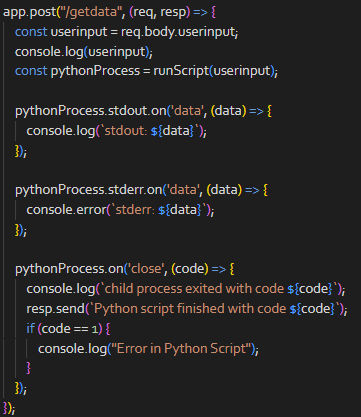
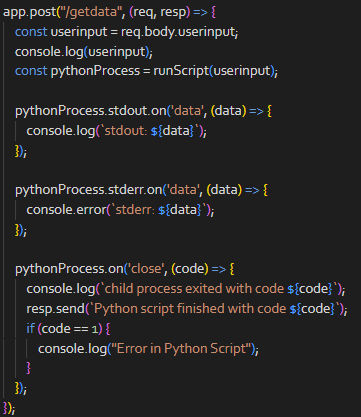

main.py
Main.py is a crucial part of this project, with its most important tasks including:
- Calling webscrape.py,
- Converting the CSV to JSON, cleaning the data as it goes,
- Calculating graphs,
- Doing linear regression calculations to provide predictions, where arr [0] is a point on the line, and arr [1] is the slope.
- Estimating the price a week from now.
Graphs that were calculated in python are saved as images, for debugging.